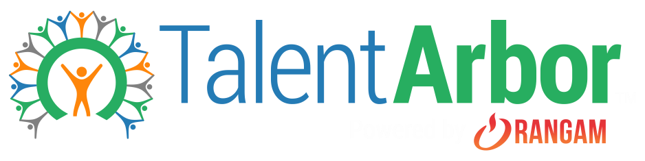

Foundations · Color · Brand mapping
The mark isn't just decoration — it encodes a direction. Sampled from the actual artwork, here's the palette and the four things it says about where our accent should go.

Green
#27AE60 · 145°
Hero. "Arbor", the tree/ring — the growth metaphor.
Cerulean
#247BB5 · 204°
"Talent" wordmark. A light ocean blue.
Orange
#FE860B · 30°
The rising-hands figure.
Gray
#808080 · 0°
The crowd of people around the ring.
Rangam red
#E7353B · 359°
"Powered by" flame — corporate lockup only.
What it tells us
"Arbor" means tree. The green ring, the growth, the rising figure — the brand's whole idea is people growing. For a coaching product about building preparedness, a green/teal accent isn't just on-brand, it is the story. Your instinct to lean green is right.
The mark's blue is a light cerulean (204°); our locked primary is a deep blue (262°). That's fine — the logo is a fixed lockup, and its cerulean would fail AA as a UI action color. We keep them separate on purpose, not by accident.
Green + cerulean + orange reads optimistic, community, approachable — a tree made of people. That warmth is the right emotional register for a nervous candidate. Orange earns a place, but a small one.
If growth = green, the preparedness scale can end on the brand's own green (Not practiced → … → Strong). The palette and the pedagogy become the same thing — a rare kind of coherence.
So — which green, against the locked blue?
Arbor green · ~148°
#2BAE63
Closest to the mark, friendly and optimistic. Further from blue → more vibrant contrast, a touch more energetic.
Viridian · ~162°
#17A079 · deep #12805B
Nods to the logo, calmer against the blue (near-analogous). Deep sibling #12805B is the AA-safe solid/text green.
Teal · ~178°
#0EA894
Most analogous to blue → calmest, most "tech". But it drifts furthest from the logo's friendly green.
Same governance as orange: all three are light — none passes AA with white text (~3:1). The accent is a tint-fill + dot color; solids and text use the deep #12805B.
The scheme this points to